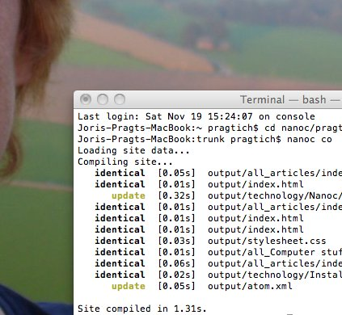

I have previously played around with different systems for creating a personal webpage. Working in HTML quickly frustrated me because it is in essence illegible. Also, it made no sense to me to have to repeat all the layout and navigation stuff in each page.
My first real attempt at a personal page already had the design that is close to what is here now. I made it using Apache Cocoon, and the abstraction level really appealed to me. However, in practical use it turned out to be way too heavy on the server. The once-supercoputer server I was using (a SGI Indigo) could not handle the java. I ended up using a web spider to convert everything into static pages, not really a satisfactory approach.
Now, years later, i am playing with Nanoc. It is one of a range of static webpage generation tools that have sprouted since the Ruby programming language has become popular.
Nanoc is reasonably well documented (the objects very well, the use a bit less detailed), and there is a community site that includes several examples of web sites which are a great help. To set up my site, I used two main sources: The Nanoc website and the Schof.org site by Mark Schofield. Especially the practical example of schof.org has been a great help.

An RSS feed for the site
Of course, a blog should have a RSS feed. Even though you have no readers yet… One never knows when it will be useful.
So, I am trying to get the Blogging helper RSS stuff to work. The [[documentation][http://nanoc.stoneship.org/docs/api/3.1/Nanoc3/Helpers/Blogging.html#atom_feed-instance_method]] shows that we need to set up some stuff. I did just that, although I must say I really dislike the excerpt tag, because of its American English brutality. I will try to come up with a way to use summary instead.
http://members.home.nl/pragtich/Making a personal website using Nanoc2012-07-18T22:00:00ZJoris Pragthttp://members.home.nl/pragtichtag:members.home.nl,2012-07-19:/pragtich/technology/Compiling gstreamer for C920 webcam.htmlCompiling a modified GStreamer for the C920 webcam2012-07-18T22:00:00Z2012-07-18T22:00:00Z<h1 id=”satisfying-build-requirements”>Satisfying build requirements</h1>
<p>## Packages</p>
<p>Basically, a matter of <code>make prereq</code> and <code>sudo fink install xxx</code> until
all dependencies were met.</p>
<h2 id=”filesystem”>Filesystem</h2>
<p>The OpenWRT buildroot needs a case-sensitive filesystem and tells you
that:</p>
<pre><code>Build dependency: OpenWrt can only be built on a case-sensitive
filesystem
</code></pre>
<p>The default OS X system is not case sensitive. There is a simple
solution: create a separate disk image. As I found
<a href=”https://forum.openwrt.org/viewtopic.php?id=20914”>here</a>:</p>
<pre><code>hdiutil create -size 2048m -fs HFSX -volname openwrt openwrt
Doubleclick the dmg
cd /Volumes/openwrt/
tar cf - ~/openwrt | tar xfp -
</code></pre>
<p>Also, I found the following tips that may be necessary (?) in the same
forum topic:</p>
<pre><code>A couple notes on using MacOS X as a build environment that I’ve found so far:
Package names for “port” that you may need:
* gmake
* gawk
* gtar
* coreutils
* findutils
* getopt
* wget
(There may be others, I can’t easily do a “clean install” on Mac)
$ export PATH=”/opt/local/bin:$PATH” # so that the GNU versions get picked up
You may need to
$ chmod +x scripts/md5sum # appears to be “fixed” in current trunk
As suggested by marca, update XTools and re-symlink (gcov not required, AFAIK, but consistency is good)
/usr/bin/g++ -> g++-4.2
/usr/bin/gcc -> gcc-4.2
/usr/bin/gcov -> gcov-4.2
If you want to build the documentation, MacTeX will do it – http://www.tug.org/mactex/
(though there is no BSD-make wrapper in that directory, so gmake in the docs directory)
</code></pre>
<h1 id=”compiling”>Compiling</h1>
<pre><code>make menuconfig
# selected ar7xx, minimal profile, toolchain and sdk
make tools/install
make toolchain/install
</code></pre>
tag:members.home.nl,2012-07-13:/pragtich/technology/Aquamacs Notes.htmlSome notes on using Aquamacs2012-07-12T22:00:00Z2012-07-12T22:00:00Z<p>Aquamacs is a great text editor for OS X. It does, however, have its
idiosyncrises. So, here I am keeping notes on what worked for me.</p>
<h1 id=”documentation”>Documentation</h1>
<p>First of all, Google is your friend. But there is also some
<a href=”http://www.emacswiki.org/emacs/AquamacsFAQ”>good documentation on the EmacsWiki site</a>.</p>
<h1 id=”configuration-file”>Configuration file</h1>
<p>The Aquamacs does not use the standard <code>.emacs</code> locations. Instead,
the stuff is hidden in the library. For details, check
<a href=”http://www.emacswiki.org/emacs/AquamacsFAQ”>the Aquamacs FAQ</a>. I tend to edit the files in
<code>~/Library/Preferences/Aquamacs Emacs/</code> by hand, especially <code>customizations.el</code>.</p>
<p>To be honest, this exasperates me so much, that I have learned to use
the ‘customization’ tool.</p>
<h1 id=”emacsclient”>Emacsclient</h1>
<p>In using Aquamacs, I wanted to start using it as the default
editor. Some research was needed.</p>
<h2 id=”setup”>Setup</h2>
<p>I edited <code>.bash_profile</code> and added the following`;</p>
<pre><code># editor setup
export EDITOR=’/Applications/Aquamacs.app/Contents/MacOS/bin/emacsclient’
export ALTERNATE_EDITOR=vi
alias e=$EDITOR
</code></pre>
<p>Probably I should research how to use ALTERNATE_EDITOR to startup
Aquamacs, but I want to be sure that I am actually on a windowing
station to do that – too lazy at the moment. Maybe later. As it is
now, Aquamacs will be used when it’s running (like when I’m working on
this website), and vi will be used otherwise. </p>
<p>It also sets up a shorthand editing alias <code>e</code> for my convenience.</p>
<p>To get the server to automatically load, I used the customization
interface (Aquamacs -> Preferences, Interfacing to external
utilities, Server) to enable ‘Server Mode’. That way, any time
Aquamacs starts up, it will be listening.</p>
<h2 id=”using”>Using</h2>
<p>Ending an editing session that was started this way, goes as follows:</p>
<pre><code>C-x #
</code></pre>
<p>Many people rebind this key to something like <code>C-c c</code> to better match
other applications like GNUS or VCS. Maybe I will too, some day.</p>
tag:members.home.nl,2012-07-13:/pragtich/kippycam/Openwrt connection checking.htmlKeeping Openwrt online using DHCP2012-07-12T22:00:00Z2012-07-12T22:00:00Z<p>I noticed, when
<a href=”network-layout.html”>installing the WiFi network bridge to the garden shed</a>,
that the DHCP client does not reconnect when the connection has been
lost. It just sits there (don’t know when it would reconnect, maybe
when the lease expires?) unconnected. For my purpose, that’s not very
satisfying, as I need the connection to be robust. </p>
<p>Since I had worked with <code>monit</code> before, I figured this would be a
great way to periodically check the state of the connection and
re-enable it when it has dropped out. At a later date, <code>monit</code> could
also turn out to be helpful in making sure that all other services on
the router remain healthy. </p>
<h1 id=”installing–configuring”>Installing & configuring</h1>
<pre><code>opkg update
# I am getting the packages from my local copy of the trunk, just
to have it all be consistent. That probably is only critical for
the kernel modules packages, but let’s do it for sake of
simplicity
opkg install monit
vi /etc/monitrc
</code></pre>
<p>I added some sensible settings from the template that is in
<code>/etc/monitrc</code>, mainly to start as a daemon, put the work files in
<code>/tmp</code> and set the frequency of the checks. And the check for a
connection:</p>
<pre><code>check host kiprouter with address 10.0.0.4
if failed icmp type echo count 3 with timeout 3 seconds then
exec “/etc/init.d/network restart”
</code></pre>
<p>Then to enable and start monit:</p>
<pre><code>/etc/init.d/monit enable
/etc/init.d/monit start
</code></pre>
<p>Testing results later…</p>
tag:members.home.nl,2012-07-04:/pragtich/technology/Nanoc-Github-Pages.htmlUsing Nanoc to fill Github Pages2012-07-03T22:00:00Z2012-07-03T22:00:00Z<p>Started out with an already-existing nanoc folder.</p>
<p>I Installed git for mac using the standard installer supplied on
git-scm.com (version 1.7.11.1) and created an account on github.</p>
<p>Created a repository called <username>.github.com</username></p>
<p><a href=”http://schmurfy.github.com/2011/05/06/create_your_github_user_page_with_nanoc.html”>Followed (approximately) this link</a>
although I made a few changes.</p>
<p>First of all, I already had a checkin, so could skip the first code
box. I did rename the <code>master</code> branch to <code>source</code> and add a second remote:</p>
<pre><code>git branch -m master source
git remote add pages https://github.com/<user>/<user>.github.com.git
git push -u pages source
</code></pre>
<p>The output sounds promising:</p>
<pre><code>Counting objects: 102, done.
Delta compression using up to 2 threads.
Compressing objects: 100% (95/95), done.
Writing objects: 100% (102/102), 237.00 KiB, done.
Total 102 (delta 19), reused 0 (delta 0)
To https://github.com/pragtich/pragtich.github.com.git
* [new branch] source -> source
Branch source set up to track remote branch source from pages.
</code></pre>
<p>The <code>source</code> branch now holds the entire page source (including
any output).</p>
<p>Now I followed the cloning instructions quite rigidly (because I do
not really understand them yet).</p>
<pre><code># fetch a working copy of your repository
$ git clone https://github.com/<user>/<user>.github.com.git output
$ cd output
# create the isolated branch
$ git symbolic-ref HEAD refs/heads/master
$ rm .git/index
$ git clean -fdx
</code></pre>
<p>Then recreate the output files:</p>
<pre><code>cd ..
nanoc compile
git commit -a
git push pages
cd output/
git add *
git commit
git push origin master
</code></pre>
<p>The <code>git push origin master</code> part was tricky to figure out to me. It
pushes the output folder’s content to it’s set remote origin (which
came from the <code>clone</code>, I assume. Adding the <code>master</code> determines that
the files are going into the <code>master</code> branch (which is the leading
branch for the GitHub Pages).</p>
<p>Finally, I did:</p>
<pre><code> touch .nojekyll
git add .nojekyll
git commit
vi .gitignore #add .nojekyll to this file
</code></pre>
<p>This should put a .nojekyll file into the repository, that will not
get clobbered when I nuke the output/ folder (I hope).</p>
<p>So now, the workflow is:</p>
<ol>
<li>Update files in the <code>content/</code> folder</li>
<li>Compile and upload to test server (I use a rake file)</li>
<li>Verify results</li>
<li>In the source folder: <code>git commit -a; git push pages</code></li>
<li>In the output folder: <code>git commit -a; git push origin master</code></li>
</ol>
<p><strong>TODO</strong>: Add a rakefile to auto-push both the source and the output once
I have a satisfactory build.</p>
<h1 id=”pushing-using-nanoc-git”>Pushing using nanoc-git</h1>
<p>I am playing with nanoc-git. I found it through a Google search. It’s
maker claims it to be alpha-level software. Let’s see. It lives
<a href=”https://github.com/cspicker/nanoc-git”>here</a>.</p>
<p>The script does rebuild the output folder implicitly. So it breaks the
prototyping build thing that I have described above. Maybe I’ll try to
rewrite it to allow some kind of prototyping, or maybe I will stick
with the plan before. I will see. Good thing I’m keeping this blog,
because I tend to forget each syntax before I get to use it again.</p>
<p>For sake of documentation, I did the following:</p>
<ul>
<li>
<p>Updated <code>config.yaml</code>:</p>
<pre><code> # Additions for nanoc-git: http://graysky.org/2008/12/git-branch-auto-tracking/
deploy:
default:
dst_remote: pages
dst_branch: master
src_branch: source
</code></pre>
</li>
<li>
<p>Installed nanoc-git:</p>
<pre><code> gem install nanoc-git
</code></pre>
</li>
<li>
<p>Edited <code>Rakefile</code></p>
<pre><code> require ‘nanoc-git/tasks’
</code></pre>
</li>
</ul>
<p>Then, to execute: `rake deploy:git’ should </p>
<ol>
<li>Clean the nanoc site</li>
<li>Check out the source (<code>source</code>) from <code>git</code></li>
<li>Compile the site using <code>nanoc</code></li>
<li>Check out the destination (<code>master</code>) from <code>git</code></li>
<li>Copy all the files from the <code>output/</code> folder to the root of
<code>master</code></li>
<li>Commit in <code>git</code></li>
<li>Push to the remote <code>master</code></li>
<li>Check the source back out</li>
</ol>
<p>A possible workflow could be:</p>
<pre><code># Edit the file
git add <file>
git commit
rake co #this is my prototyping (sitecopy) rake
# Check: ok?
rake deploy:git
</code></pre>
<p>or another option:</p>
<pre><code># Edit the file
rake co #this is my prototyping (sitecopy) rake
# Check: ok?
git add <file>
git commit
rake deploy:git
</code></pre>
<h1 id=”getting-a-domain-name”>Getting a domain name</h1>
<p>I registered <code>pragti.ch</code> at <a href=”http://nic.ch”>nic.ch</a> and organized a
free DNS service to do the DNS hosting. Then, tried to set up the
CNAME following
<a href=”https://help.github.com/articles/setting-up-a-custom-domain-with-pages”>the documentation at Github</a>.</p>
<pre><code>git checkout master
vi CNAME
# just one line:
# pragti.ch
git add CNAME
git commit
git push pages
git checkout source
</code></pre>
<p>Did not work immediately, but many times DNS can take some time to
update. Let’s wait and see.</p>
tag:members.home.nl,2012-06-22:/pragtich/kippycam/network-layout.htmlGetting network access in the garden2012-06-21T22:00:00Z2012-06-21T22:00:00Z<h1 id=”the-problem”>The problem</h1>
<p>The garden is quite long and goes around a bend. The house has an extension towards the back that blocks most lines of sight between the garden and the main house. Also, the distance from the services entry point and the shed where the chickens live, runs in the tens of meters. Here’s an overview of the situation:</p>
<p><img src=”gardenlayout.jpg” alt=”Layout of the garden” /></p>
<p>The best way would be to dig a pipe through the garden and wire with ethernet. But this would involve digging up 20 meters of paving, and 20 meters of grass. Although it needs to be done some day (to get water and electricity in the garden, for one thing), now is not the time. So — wireless is the way to go!</p>
<h1 id=”layout”>Layout</h1>
<p>To get a wifi signal at the shed, the existing infrastructure in the house is insufficient. It only reaches roughly 10 meters into the garden. Too many walls, too many trees and leaves. </p>
<p>An extra access point is needed. In the first place I will create a wireless repeater, because this has worked before. Later, I may relocate the repeater to a place where I can reach it with Ethernet: that would be a more elegant solution in the long run.</p>
<p><strong>TODO</strong>: Research <a href=”http://www.rubyinside.com/ruby-graphviz-data-visualization-1477.html”>Railroad</a> for creating really nice plots.</p>
<p>The ouline is as follows:</p>
<pre><code>Main Router ==> Repeater ==> Webcam server
Airport TL-WR703N TL-WR703N
DHCP server relay wlan-wlan relay wlan-lan
</code></pre>
<h1 id=”openwrt-configuration”>OpenWRT configuration</h1>
<h2 id=”repeater”>Repeater</h2>
<p>I used the <code>luci</code> webinterface to configure relaying. Setting this up goes something like this:</p>
<pre><code>opkg update
opkg install luci luci-proto-relay
# this auto-installs many dependencies, including relayd and uhttpd
/etc/init.d/uhttpd enable
/etc/init.d/uhttpd start
/etc/init.d/relayd enable # This is required in trunk versions
</code></pre>
<p>Then, <code>luci</code> should be up and running by sending the browser to the router’s IP address (most likely <code>192.168.1.1</code>). </p>
<p>A reasonably clear guide to configuring relaying through <code>luci</code> is given on <a href=”http://trac.gateworks.com/wiki/relayd”>this page at gateworks.com</a>. Only trouble is, that this example is for relaying between <code>lan</code> and <code>wwan</code>. I started ambitiously, trying to relay to both <code>lan</code> and a new <code>wifi AP</code>, but this stranded in the complications of it. Start easy.
Also disable security first. This cost me an afternoon, because <code>psk2</code> and the <code>auto</code> cypher setting were not playing nicely with OS X.</p>
<p>TODO: Add my own nice pictures of how wifi relaying works.</p>
<p>Another place to check for instructions is <a href=”https://forum.openwrt.org/viewtopic.php?pid=163262#p163262”>In the forums</a>, but be careful. For one, the <code>trunk</code> releases need an additional <code>/etc/init.d/relayd enable</code>. Also, some of the <code>wireless</code> settings are outdated. The essence is good.</p>
<p>Something very confusing is the IP address choice for the interface that is not directly connected to the ‘live’ network. So the ‘access point’ network in this case. It gets a static address by definition, but this address is largely ignored. Actually, the relayd passes all traffic from the outside network to the internal network. This includes DHCP requests, which also get passed on and get answered by the Main Router. So in fact all clients on both sides of the relay use IP addresses from the Main Router’s subnet. Setting the IP address of the ‘inside’ network to a different subnet helps in case the ‘outside’ network is unavailable or does not provide DHCP. Then, we need this ‘inside’ subnet in order to gain access to the router.</p>
<h2 id=”webcam-server”>Webcam server</h2>
<p>The webcam server follows <a href=”http://trac.gateworks.com/wiki/relayd”>the instructions at gateworks.com</a> mostly literally. I kept the <code>lan</code> IP at <code>192.168.1.1</code>, simply because there was no real reason to change it. Relay is overkill here, but I chose it because it allows any potential clients on the <code>LAN</code> interface (wired clients) to join in the network as if nothing was in between. </p>
<p>TODO: Add description of mjpg-server in additional page and link here</p>
<h1 id=”physical-network”>Physical network</h1>
<p>The wireless repeater helps bridging the distance between the house and the shed, but it does rely on ‘line of sight’. And even with a clear line of sight (which I do not have, there are tree leaves and a roof partially in the way), the distance is still significant. I took several steps that I intend to document separately:</p>
<ol>
<li>Convert the TL-WR703N routers to add external antenna connectors.</li>
<li>Construct <code>cantennas</code> to have better gain and a more efficient (narrower) beam.</li>
<li>Place the antennas where there is optimal line of sight</li>
</ol>
<p>At present, this is enough to cover my needs with limited bandwidth, but acceptable reliability. After researching a bit, cantennas seem to be over-hyped. Maybe I will build yagi or other high gain antennas at a later date. For now, the cans are working.</p>
compile '/atom/' do
filter :erb
end
route '/atom/' do
'/atom.xml'
end
Maruku threw some errors. Switched to Kramdown and all is well.
I was confused for a while, because no orange icon was showing. Turns out that Firefox has removed the RSS feed icon from the toolbar. You can add it with customize, but even then it is oly black and gray. Not such a clear message anymore, compared to the old way.